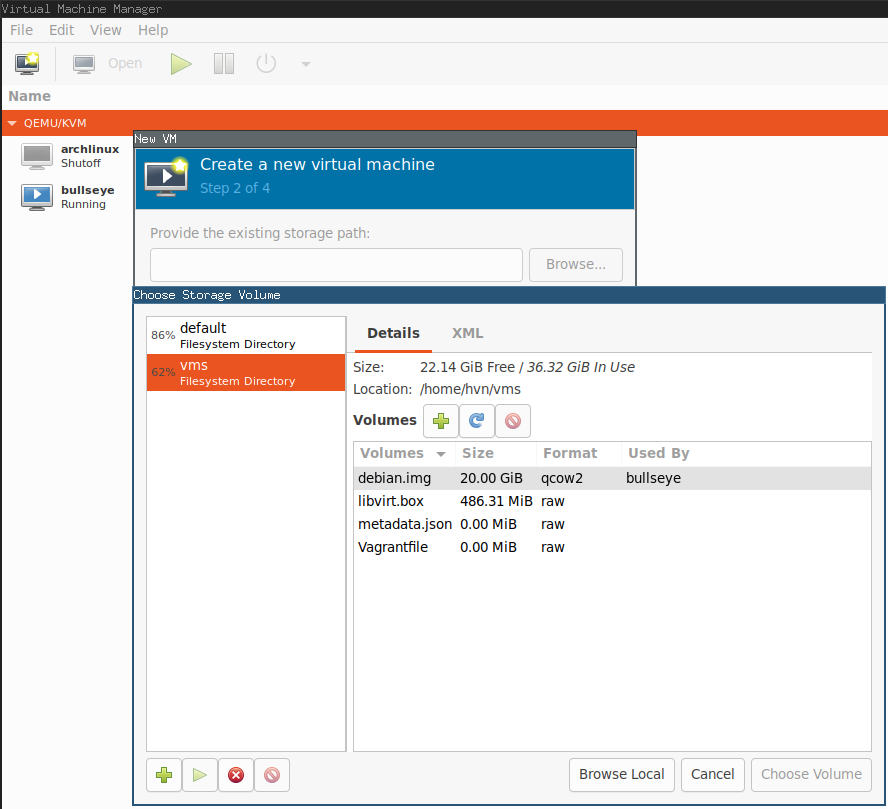

Có 3 giải pháp tạo máy ảo phổ biến: vmware, virtualbox và kvm (linux only).
Bắt đầu với Virtualbox từ khi dùng Windows, đi làm dùng Ubuntu chuyển qua kvm vì các dòng lệnh & công việc (openstack) dùng hàng ngày, rồi lại quay lại VirtualBox khi đó là lựa chọn duy nhất trên MacOs. Ngày nay, lại quay lại với kvm: vì open-source.
Mặc dùng VirtualBox là open-source, một số tính năng trong extension-pack lại chỉ của riêng Oracle và chỉ được dùng cho mục đích cá nhân, tức không thể dùng trên máy công ty/trong công việc. Nếu công ty đủ lớn, lỡ dùng trong công việc có thể bị kiện, đặc biệt là khi làm công ty nước ngoài.
Trên MacOS ngày nay có thể dùng UTM.
Cài đặt libvirt
virt-manager là chương trình giao diện đồ họa.
sudo apt install libvirt-daemon libvirt-clients virt-manager
Thêm user hiện tại vào group libvirt:
sudo usermod -a -G libvirt $(whoami)
Tải debian vagrant box
Vào https://app.vagrantup.com/debian/boxes/bullseye64
tải file libvirt, ví dụ:
https://app.vagrantup.com/debian/boxes/bullseye64/versions/11.20220912.1/providers/libvirt.box
Giải nén:
tar xf libvirt.box
sẽ thấy có file libvirt.img.
Bật virt-manager > File menu > New Virtual Machine > Import from disk > chọn file libvirt.img > next next next.

Bật máy lên, đăng nhập bằng user root password vagrant.
root@bullseye:~# cat /etc/os-release
PRETTY_NAME="Debian GNU/Linux 11 (bullseye)"
NAME="Debian GNU/Linux"
VERSION_ID="11"
VERSION="11 (bullseye)"
VERSION_CODENAME=bullseye
ID=debian
HOME_URL="https://www.debian.org/"
SUPPORT_URL="https://www.debian.org/support"
BUG_REPORT_URL="https://bugs.debian.org/"
Happy hacking!